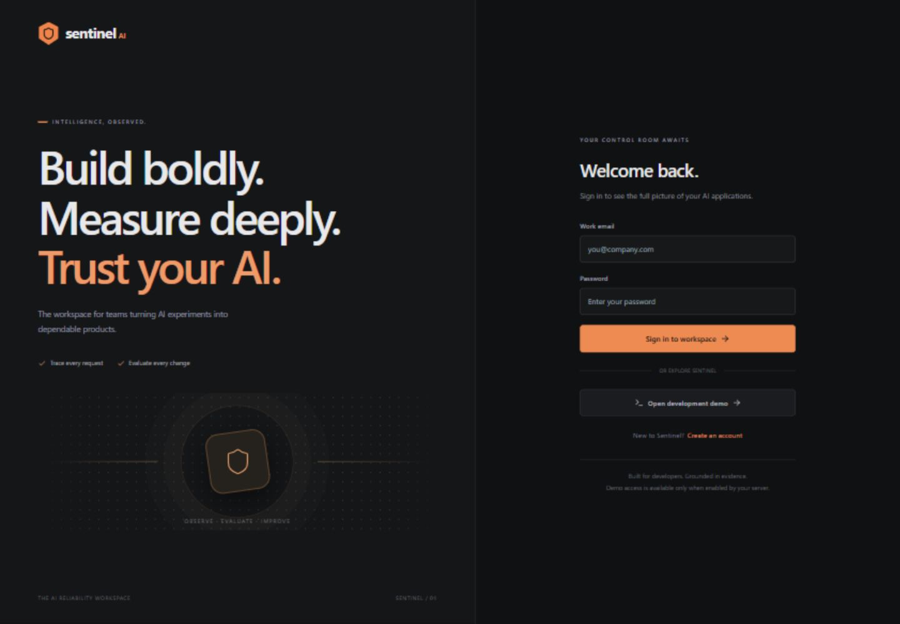
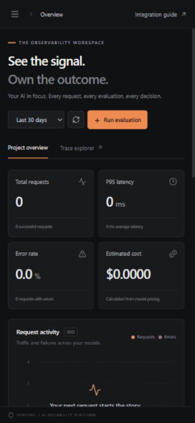

From an AI response
to an inspectable system.
LLM applications need more than a working prompt. Sentinel AI brings request tracing, dataset evaluation, model comparison, and retrieval experiments into one developer console.
Demo mode is available in a local development setup. A public hosted demo is not currently linked.
Full-stack project spanning a React / TypeScript console, FastAPI endpoints, async database models, evaluation and retrieval services, a Python instrumentation SDK, and Docker deployment configuration.
The walkthrough below maps to the public implementation. Repository tests cover authentication, workspace isolation, traces, evaluation, retrieval, and an end-to-end workflow; no load-test or production-traffic results are claimed here.

Two entry points. One project boundary.
The SDK submits JSON to /api/v1/traces/ingest. A project-scoped API key determines where the trace belongs. Separately, browser requests carry a JWT; ownership checks restrict project access to the authenticated workspace owner.
Evaluation runs compare generated output with dataset examples. The RAG path splits documents into overlapping word chunks, ranks them with TF-IDF cosine similarity, and scores the returned answer against the query and context.
Explore the architectureMake the score explainable.
Exact match & token F1
Normalized equality checks strict matches. Multiset token overlap produces precision, recall, and F1 against a reference answer. Paraphrases can score poorly even when correct.
Relevance & faithfulness
Local relevance uses query keyword coverage and an answer-length term. Faithfulness measures informative answer tokens found in the supplied context. Both are lexical proxies, not semantic correctness guarantees.
Compare before shipping
Compare evaluation runs to inspect score changes alongside individual outputs and latency. Request costs are estimates derived from model token rates, rather than provider invoices.
Local and provider modes
A deterministic simulator supports experiments without paid APIs. A configured external provider can generate outputs; failures fall back to local simulation, so the execution mode matters when interpreting results.
Practical defaults. Visible tradeoffs.
FastAPI + async SQLAlchemy
Typed request boundaries and shared database models connect the API and services. SQLite supports local setup; PostgreSQL is available for deployment.
TF-IDF retrieval
A local index keeps retrieval reproducible and inexpensive to run. Keyword similarity is limited when questions and documents use different wording.
Separate user and ingestion credentials
JWTs authenticate console users. High-entropy ingestion keys are stored as SHA-256 hashes, revealed once, and checked for revocation on requests.
Optional background SDK dispatch
A daemon thread lets instrumentation return before transmission finishes. This keeps the integration simple, but events can be lost at process exit or during an outage.
What happens when things go wrong?
- Expired session or revoked key
- The API returns 401. The browser clears stored credentials and emits a session-expired event; ingestion rejects inactive or unknown keys.
- A different workspace’s project
- Project queries join the workspace ownership boundary. Missing or unauthorized projects return 404 without exposing another workspace’s data.
- Telemetry cannot load
- The console displays an alert and a “Try again” action. Metric cards show unavailable values instead of treating a failed request as zero activity.
- SDK transmission fails
- The client applies a configurable timeout, logs rejected responses or transport errors, and returns None. It does not provide durable buffering or automatic retries.
- External generation fails
- The evaluation service falls back to a local simulator. The current exception path suppresses the provider error; explicit fallback reporting is a reliability improvement still to make.


Keeping telemetry trustworthy across failures.
The central engineering challenge is distinguishing an empty workspace, an unavailable API, and a genuinely failed model request while keeping every result inside its project boundary. A convincing dashboard needs those states to mean different things.
Preserve the boundary
Browser access resolves the user’s workspace ownership; ingestion resolves the project from the API key. Both paths connect to the same trace and evaluation records. Isolation tests attempt access with a second user and assert rejection.
Preserve the meaning
The dashboard separates loading, empty, and connection-failure states. Evaluation catches per-example failures and records error details and a count; a completed run can still contain failed examples. Provider-level fallback is a separate limitation described above.
The resulting design connects observable UI states to API responses and persisted records. That is the engineering story behind the interface, rather than a claim about production scale.
Dashboard state handling Evaluation failure recordsEvidence you can inspect.
Backend checks
On pushes and pull requests targeting main or master, GitHub Actions sets up Python 3.13, installs backend and SDK dependencies, applies Alembic migrations, and runs the backend Pytest suite.
Frontend gate
A separate Node.js 22 job installs frontend dependencies and runs the production build and type check. Frontend unit tests exist, but this workflow does not run them. The workflow validates builds; it does not automatically deploy.
Workspace isolation
The security regression creates two users and verifies that the second cannot read the first user’s project, traces, API keys, or datasets.
API lifecycle
The integration scenario registers a user, creates a project and key, ingests a trace, checks analytics, creates a dataset, evaluates outputs, compares runs, and attempts unauthorized access.
These are implemented test scenarios, not a code-coverage percentage or a claim that the latest CI run passed. The repository’s redesign notes report 9 backend and 6 frontend tests passing in that earlier verification; those suites were not rerun for this portfolio update.
Inspect CI workflow View workflow runs Isolation regression API lifecycle testFrom local development to a deployable stack.
Deployment topology
Docker Compose defines an Nginx-served frontend, FastAPI backend, PostgreSQL 16, and Redis 7. The backend waits for database and Redis health checks; persistent volumes retain their data. Redis is configured infrastructure, not evidence of a durable evaluation queue.
Operational visibility
The console exposes request volume, error rate, latency percentiles, model usage, estimated cost, and recent failed traces. Health endpoints support service checks; SDK warnings and errors expose transmission failures. External alerting and centralized log retention are not demonstrated.
Before a public deployment: replace default secrets and passwords, restrict CORS and database exposure, configure HTTPS and persistent storage, remove development demo data, and verify migrations and recovery against PostgreSQL. Docker configuration is provided; a production deployment has not been verified here.
Compose configuration Deployment guideAccess controls are only part of data safety.
Project authorization limits who can read traces, and ingestion credentials are stored as hashes. However, the current ingestion code persists submitted prompts, outputs, errors, and metadata directly. Automatic PII detection, secret redaction, and retention enforcement are not implemented in that path.
Until those controls exist, integrations should omit sensitive payload fields or sanitize them before submission, including nested span data, metadata, and error messages. A future ingestion policy should apply field allowlists, redaction before persistence, payload limits, and retention rules, with tests that prove secrets never reach stored traces.
Inspect trace persistence Security designBuilt to inspect. Still room to harden.
Local scoring does not establish factual accuracy, and TF-IDF is not a semantic embedding model. SDK delivery needs a bounded queue and retries for stronger guarantees. Provider fallback needs explicit error reporting. Scheduled evaluations, report exports, and direct OpenTelemetry ingestion remain roadmap items.
Production operation also requires HTTPS, a strong signing secret, restricted CORS, persistent storage, and deployment-specific validation. The repository’s demo and screenshots do not establish throughput, uptime, or production readiness.
Browse test coverage